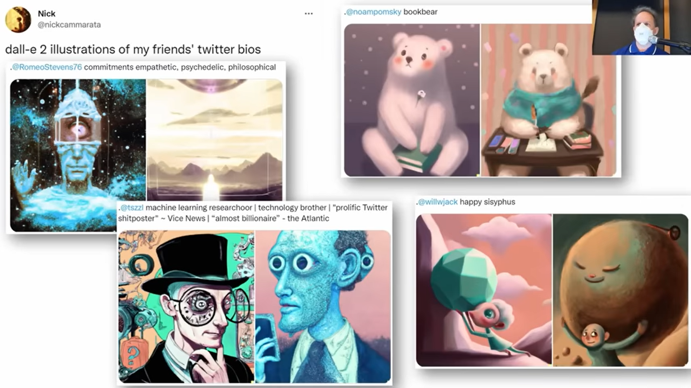
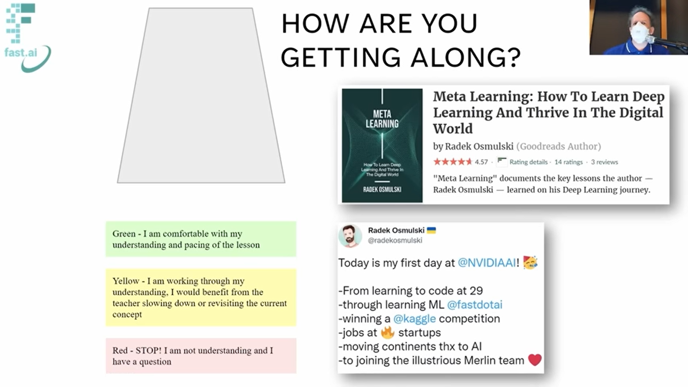
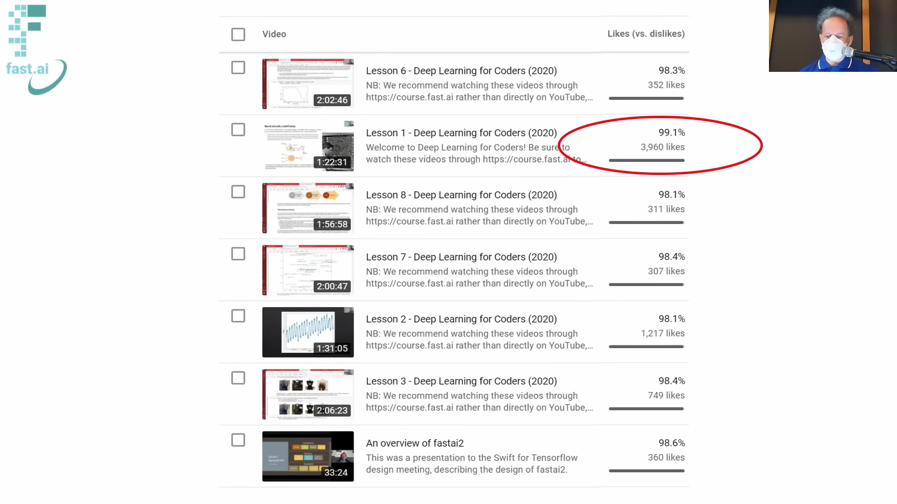
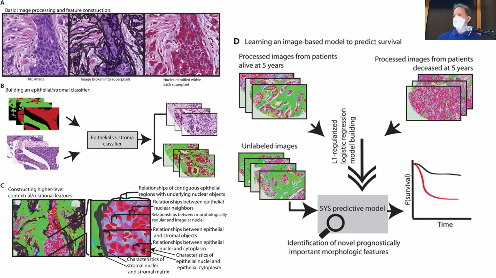
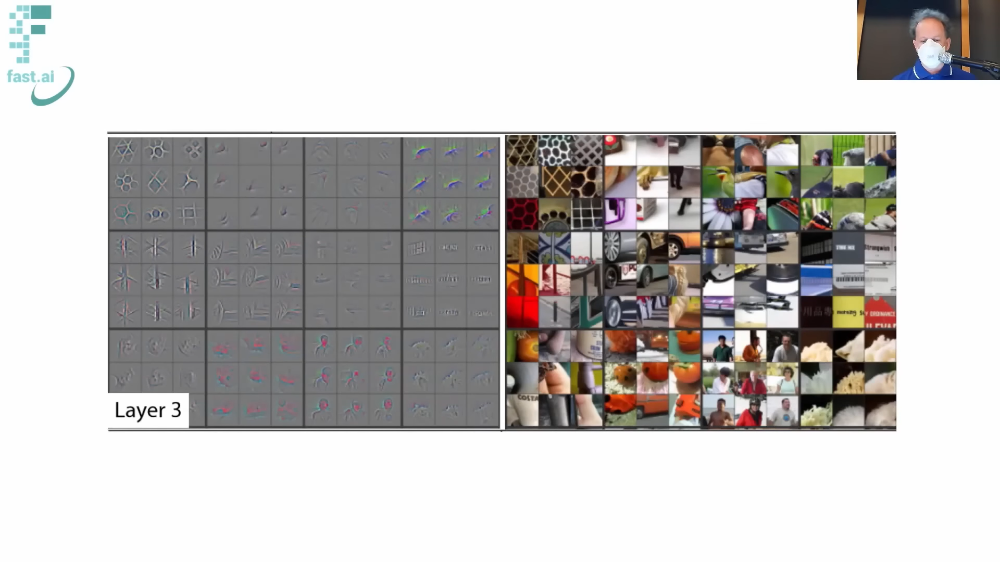
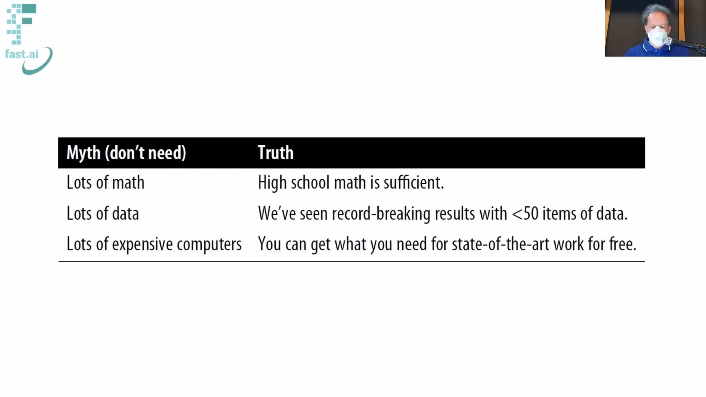
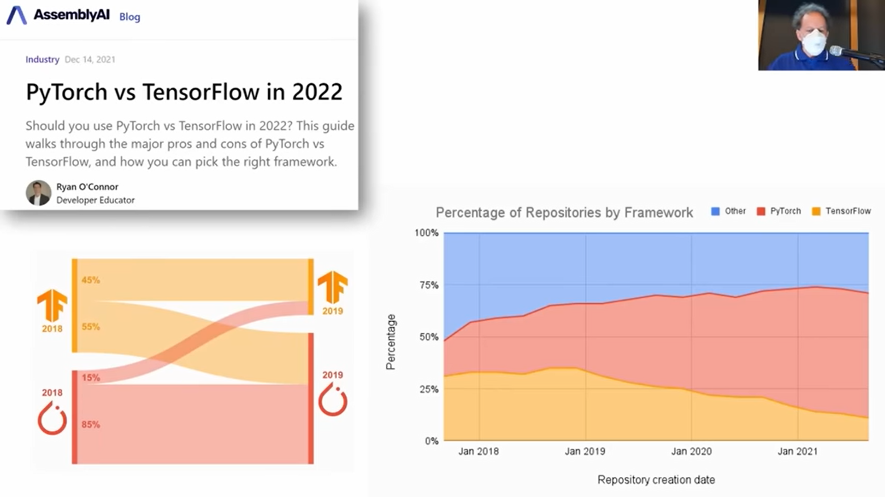
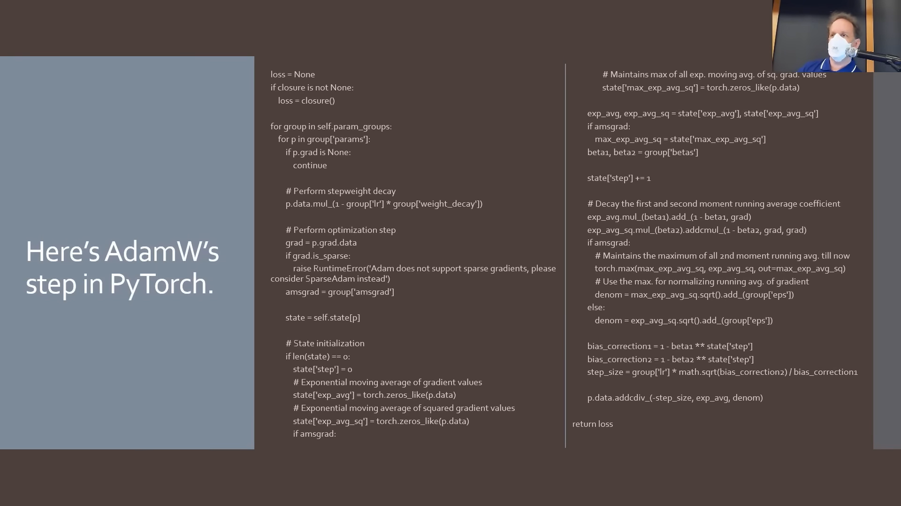
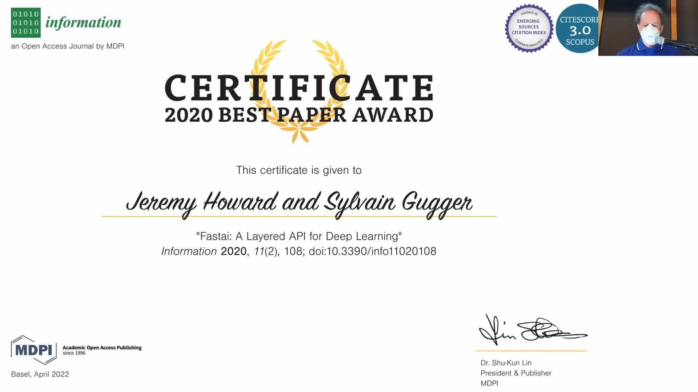

!pip install -Uqq fastaiLesson 1
Introduction
Welcome to Practical Deep Learning For Coders!
This is the fifth version of the course.
It’s the first new one that has been done in 2 years since the previous version in 2020 and a lot of cool new things have come up along the way to cover.

A Big Jump Since 2015
It is amazing how much things have changed.
Below is an xkcd (highly popular among most coders and alike) comic from the end of 2015 which depicts the situation back then.

It can be hard to tell what’s easy and what’s impossible in computing.
In 2015 it was nearly impossible to create a code that can check if an image is of a bird or not! So impossible that it became the idea of a joke.
Now in 2022, we can pull it off for free in under 2 minutes.
Is It A Bird?
The following Python code does it for us. Surprisingly there is very little code. because of the following reasons:
- Python is a very concise language, (but not too concise). It has fewer boilerplate than other languages.
- Using the fast.ai library makes a lot of things convenient for us.
Whenever using a cloud platform like Colab or JNs in Kaggle, it is a good practice to have this cell at the top. Running the above cell makes sure that the most recent version of any library/software is used. Older versions can run into some problems of not running smoothly.
from fastbook import *urls = search_images_ddg('bird photos', max_images = 1)
len(urls), urls[0](1,
'http://3.bp.blogspot.com/-HBC7eqEDUck/UeBGRtqhpXI/AAAAAAAADfw/LXvw7qFgo8I/s1600/Flamingo-Bird.jpg')Here we are searching in DuckDuckGo for images of birds and their URLs and stored in the variable urls.
The number of URLs and the URL of the first image is outputted.
dest = Path('bird.jpg')
if not dest.exists(): download_url(urls[0], dest, show_progress = False)im = Image.open(dest)
im.to_thumb(256, 256)We download the image, the first one.
So, the above script is something that can download images of birds (or anything for that matter) from the internet.
Our goal is to build a system that can recognize images that are birds or not birds. Computers or models need numbers as inputs to work with. Luckily images are indeed made of numbers. PixSpy is an online viewer which helps us see these numbers in an image.
Explanation of how images are stored…?
searches = 'forest', 'bird'
path = Path('bird_or_not')
if not path.exists():
for o in searches:
dest = path/o
dest.mkdir(exist_ok = True)
results = search_images_ddg(f'{o} photo')
download_images(dest, urls = results[:200])
resize_images(dest, max_size = 400, dest = dest)To train our model, we need images of birds and non-birds, but DuckDuckGo or Google doesn’t show images of non-birds. So, we went with something like images of forests.
In the searches, we went and searched for forest images and bird images, and then downloaded and resized them, about 200 of them each.
We are resizing it to small pixels because computers take a large amount of time to just open an image that is larger in size.
failed = verify_images(get_image_files(path))
failed.map(Path.unlink);When we download images we often get a few broken ones(?)
A model does not work successfully with broken images.
The above piece of code finds these broken images and unlinks them.
{python} dls = DataBlock( blocks=(ImageBlock, CategoryBlock), get_items=get_image_files, splitter=RandomSplitter(valid_pct=0.2, seed=42), get_y=parent_label, item_tfms=[Resize(192, method=‘squish’)] ).dataloaders(path, bs=32) dls.show_batch(max_n=6)
{python} dls = DataBlock( blocks = (ImageBlock, CategoryBlock), get_items = get_image_files, splitter = RandomSplitter(valid_pct = 0.2, seed = 42), get_y = parent_label, item_tfms = [Resize(192, method = ‘squish’)] ).dataloaders(path)
dls.show_batch(max_n = 6)
Now, we create what is called a data block.
Data block gives fast.ai library all the information of an image that it needs to create a computer vision model. It gets all the image files that we downloaded and shows us some, let us say 6. We can easily check the data with this.
So now we have downloaded 200 images of birds and forests each and have checked them.
{python} learn = cnn_learner(dls, resnet18, metrics = error_rate) learn.fine_tune(3)
Here, the model learns it. This now runs through every photo 400 and learns about how a bird or a forest looks like.
Overall it took under 30 s which was enough to finish doing what we saw in the comic.
{python} is_bird, _, probs = learn.predict(PILImage.create(‘bird.jpg’)) print(f”This is a: {is_bird}.”) print(f”Probability it’s a bird: {probs[0]:.4f}“)
By passing in our own image, we can check if an image is a bird or not with the probability rounded to the nearest to 4 decimal places.
Hence, something extraordinary has happened since 2015, something which was considered nearly impossible. What was once a joke, can now be done on our laptop in under 2 minutes.
Key Takeaway From The Model We Ran
Clearly, creating real-world deep learning working codes does not require:
- Much Code
- Much Math
- Much Time
- Much Data
- Expensive Computers
Hence, doing DL is pretty much accessible to everyone.
Deep Learning & The Current World Around Us
DL is evolving rapidly, thereby giving rise to various new stuff. Following are some recent developments that came about a few weeks before the start of this course.
Deep Learning & Art
- DALL.E 2, is an AI that can create real artistic images based on the descriptions we give it. 

- Midjourney, is another similar platform.

- Self motivated artists use DL to create their own art working on a project for months.

Many fast.ai alums having a background in art have went on to create wonderful arts using DL.
Deep Learing & Language
- Pathways Language Model (PaLM) from Google can take an English question as an input and return its output an answer with the explanation or “thinking”. The diversity is vast ranging from Math problems to explaining jokes and beyond.

In short, DL is doing a lot that we would have considered impossible otherwise.
Importance Of Ethics
An important aspect to keep in consideration when venturing into solving and doing these cool things is Ethics. This will be touched upon in the course, but there is a full ethics course called Practical Data Ethics taught by Dr. Rachel Thomas that covers things in detail.
Jeremy’s Explorations In Education
Apart from being an AI Researcher, Jeremy is a homeschooling primary school teacher. This has led him to study education and bring the best education practices into his classrooms.
Coloured Cups
One of these practices is the Coloured Cups practice taken from an educator Dylan Wiliam which is an effective way for a teacher to get an idea of the classroom’s understanding of the lesson or a topic as it is being taught.
The idea is simple! All the students in the classrooms have 3 cups, a green cup, a yellow cup, and a red cup each reflecting various levels of understanding. Green means the student is understanding well, yellow means s/he is not quite sure what is going on, and red means the student has no idea of what is going on. As the lesson is being taught, the students put a cup on their desks and the teacher can see the classroom to get a sense of how the students are following along.
For this course, a virtual setup was made and Jeremy could see it from his end on the teacher version.
The above site was made by Radek one evening, one of the top Fast.ai alums and TA for the course.

Takeaway
As a learner, it is quite helpful to be self-aware of our situation. Hence, when taking the course independently, we can constantly ask ourselves how we are on the level of understanding.
When we are at red the level, it is better to approach the forums and ask questions.
A Very Different Approach To Doing fast.ai
We began this course, by jumping right in by running a model. We did not do an in-depth review of Linear Algebra and Calculus.
This way of teaching is influenced by Jeremy’s two of the favourite educators Dylan Wiliam and Paul Lockhart (and many others), who claim that learning with a context at hand makes it much better for the learner to learn.
The way we learn math at school in a very dull way is first we learn counting, then adding, then decimals, blah blah blah and 15 years later in grad-school we do the actual cool stuff. This is not the way most people learn effectively.
The best way to learn is the way we learn sports. We jump right in on the ground and start playing it instead of sitting in a classroom and studying the physics of the sport.
Do not worry though, we will go in-depth as we progress as the most sophisticated technically detailed class out there. but first, we focus on building and deploying models. we will learn why and how things work later.
Folks having a technical background might find it difficult to cope with this style.
There will be a lot of tricks and cool learning philosophies that will be embedded and scattered throughout this course, sometimes it will be called out by Jeremy sometimes it won’t but it will be there.
The Book
The course is closely based on the textbook written by Jeremy and Sylvain titled Deep Learning for Coders with fastai and PyTorch: AI Applications Without a PhD.
The course will not use any materials from the book directly which might come as a surprise as we read, but the reason is that important educational research literature claims that learners learn best when the same thing is expressed in multiple different ways. The book will have the same information presented in a different way.
One of the bits of the HW is to read the corresponding chapter of the book.
A lot of people love the book

About Jeremy
Spent 30 years of his life working around DL & ML.
He built multiple companies centered around DL.
He is the highest-ranked competitor on Kaggle.

One of his companies Enlitic was the first company to specialize in DL for medicine.
It made it to the top 20 smartest companies in 2016 by MIT Technology Review.

He started fast.ai along with Rachel Thomas a few years ago and it had a big impact in the world already.

Apart from the company’s success, along with the students they have had global recognitions for multiple projects and competitions.
One of them is their win in the DAWNBench competition, in which they demonstrated how they can train big neural networks, faster and cheaper than anybody in the world. That was a very big step in 2018.

Sooner the work made a big difference. Google and NVIDIA started using their approaches and methods to optimise many of their projects.

He is the inventor of the ULMFIT algorithm, which according to the
Interestingly, the ULMFIT model did not appear in the journal first, but in the 2016 fast.ai course in lesson 4 and was later developed into a paper.

Since, the first year of teaching the course it got noticed by HBR

And the course is loved by most of them on YouTube.

Many alumni went on to do great things.
Importance Of The Course In The Industry
The course is widely used in industry and research with a lot of success.
Andrej Karpathy said that everybody who joins the Tesla AI team are required to do this course.
In OpenAI all the residents joining are required to do this course.
Comparison Between Learning Models Now VS Back Then
A surprising question to ask is how was our model able to tell if an image is of a bird or not. Why wasn’t it able to do earlier?
Let us explore how image recognition was done in 2012, but before that, it is important to understand a few important terms.
Pathology
A field or a branch of medicine, that deals with studying human tissue for the diagnosis of diseases.
Pathologists basically take samples of the human specimen and study it under microscopes to diagnose some disease, be it cancer, etc.
Computational Pathology:
Using computer techniques in the process of pathology, i.e., using coding/ML/DL in order to study human tissues and predict the diagnosis of a disease.
H&E Images
When a pathologist studies a cell under a microscope, it is easier for him/her to see it clearly, when the cell is stained with some dye.
A dye is a substance that gives colour to the substrate (to which it is applied to), for distinguishing purposes without chemically bonding with the substrate. Pigments on the other hand chemically bond with the substrate changing its molecular structure.
In medicine, the staining is done mostly by two dyes- hematoxylin and eosin.
Hematoxylin shows the ribosomes, chromatin (genetic material) within the nucleus, and other structures in a deep blue-purple colour.
Eosin shows the cytoplasm, collagen, connective tissue, and other structures that surround and support the cell as an orange-pink-red colour.
Hence, staining with hematoxylin and eosin (referred to as H & E staining) helps identify different types of cells and tissues and provides important information about the pattern, shape, and structure of cells in a tissue sample. It is used to help diagnose diseases, such as cancer.
The images or samples collected after the staining are called H&E images.
To summarize H & E images are images of various cells which are stained with two dyes- hematoxylin and eosin, in order to study them for diagnosis of a disease.
Now let us get started.
The Story

In 2012, at Stanford, a diverse team of computational pathologists did a very successful and very famous project, which was exploring the 5-year survival chances of a cancer patient by looking at their histopathology slides.
What they did back then was a classic Machine Learning approach.
Jeremy spoke to the senior author of the project, Daphne Koller, and asked why they didn’t use Deep Learning. Apparently, at that time DL wasn’t on the radar. Hence, this was a pre-deep learning approach.
One visible answer to how we are able to create a model for a bird recognizer is because of deep learning. The question then is, What is it exactly that is happening with DL, which could not happen with ML back then? Let us see!
So the way they did this, was gathered around a group of experts from multi-disciplinary fields ranging from Mathematicians to Computer Scientists, to Pathologists, and so on, and worked on building and creating this idea for “features”, features they did not even know of to include in their approach for image recognition.
There were thousands and thousands of these features. It took a lot of years, a lot of people, a lot of code, and a lot of math.
Once they got sufficient features they fed it to an ML model, a logistic regression model in this case.
Coming back to the question earlier, the difference between ML & DL is that DL uses NNs, and NNs don’t require humans to define any features for it. NNs develop the features themselves as it learns. That was the big difference.
How DL Learns Features?
In 2015, Matt Zeiler and Rob Fergus took a trained NN and looked inside it to see what it had learned about the features.
But wait?! What do we mean by looking inside a NN? It means looking at the weights.
So they looked at the weights inside and drew a picture of them. The following image shows the 9 sets of weights they found each representing a pattern in an image.

Deep Learning is deep because it takes the previous features and combines it with other features to create and detect more advanced features.

So in neural networks we do not have to hard code these features, but just feed it examples and it will itself learn and recognize it.

The deeper the NN gets, it finds and detects more deeper features.
Each of these feature detectors helps NN in understanding an image.
Clearly, trying to hard code would be very difficult.
We shall learn ahead how NNs learn this.
This is the key difference as said.
Image Based Algorithms Go Beyond Images
A general theme can be set up for image based algorithms. But with creativity an image based recognizer can do thing beyond an image. For example:
Classifying Sounds: A sound can be converted into a waveform which is an image and the model can be run on it to classify sounds with state of the art results.

Time series: One of the students on the forum took a time series and converted it into a picture and used it in the image classifier.

Motion-Movements: Another student created pictures of mouse-movements from users of a computer. The clicks became dots, the movements became lines, and the speed of the movement was captured in colour.

Hence, with creativity, anything non-image type if it can be converted into an image representation can be used in the image classifier model.
Myths Around Doing Deep Learning
As we saw, when we trained a real working bird classifier, we:
- Didn’t use any Math
- Didn’t use much data (just 400 images)
- Didn’t use expensive computers
This is generally the case for the vast majority of doing DL in real life.
There will be some Math that will pop up which will be taught as needed or will be referred to external resources.
The Myths are passed along by big companies to store lots of data
Most extraordinary real world projects don’t need expensive computers or vast data.
There are many platforms on which one can do state of the art DL for free.
One of the key reasons for this is Transfer Learning, which shall come ahead. Most people do not know about TL.

PyTorch VS TensorFlow
n this course, we will be using PyTorch.
Folks who are way from the actual DL world would have heard of TensorFlow.
TF is dying of its popularity in recent years, whereas PyTorch is growing rapidly.
In research repositories among the top papers, TF is a tiny minority compared to PyTorch.
Great research has come out of Ryan O’Connor who also discovered that the majority of researchers using Tf in 2018 have shifted to PyTorch.
What people use in research is a very strong leading indicator of what is going to happen in the industry because it is in research all new papers and algorithms are written about. Once a new paper of high impact factor comes it will bring changes in the research community and it is always better to adapt accordingly. Usually, industry takes some time to adopt these changes, but it will happen soon.
PyTorch was used very early on when it was released for this course because based on the technical fundamentals it was clear that it was far better.
Hence, PyTorch will be used for this course.

PyTorch Has Hairy Code
PyTorch has lengthy codes for relatively simple things.
Following is a code for implementing and optimizer called Adam Optimizer in plain PyTorch taken from the PyTorch repository.

The grey bit below does the exact same thing using the fast.ai library.

fast.ai is a library built by Jeremy and others on top of PyTorch.
This huge difference does not indicate that PyTorch is bad, but it reflects the strong foundations on which PyTorch is designed which can be used to build things on top of it, like fast.ai
When we use the fast.ai library, we get access to all the power of PyTorch as well, but we shouldn’t be writing the former code when we can write the latter.
The problem with writing lots of code is there will be lots of things we can mistakes in, lots of things to not have best practices, lot of things to maintain
In general it is found that with DL less code is better.
Particularly, with fast.ai, the code we don’t write is the code with the practices involved. Hence, using the codes, fast.ai provides, we will get better results.
fast.ai library is very popular and is widely used in industry, academia, and teaching.
As we go with the course we will be seeing pure PyTorch as we go deeper and deeper to see how things work.
It won the 2020 best paper award and and hence is well regarded

Jupyter Notebook
The way Jeremy was able to run code snippets as slides was becuase of JNs.
This will be the environment in which we will be doing most of our computing for the course.
Its a web based application which is popeular and widely used in industry academia and teaching.
Its a powerful way to experiment explore and build.
Now adays most people and students run JN not on the computer but on a cloud server.
On coursefastai we can see how to use.
One of the examples is on kaggle, which not only has competitions but also a cloud notebook server.
when starting with our, just edit
When starting with somones elses nb, it will show copy and edit.
upvote before using to encourage folks
the first time we do this it sas session starting meaning its launching,
wordls most powerful calculator, where we have all the capabilities of all the programming language at our disposal
i hate clicking use keyboard shortcuts
markdown pros
! means bash shell command
images